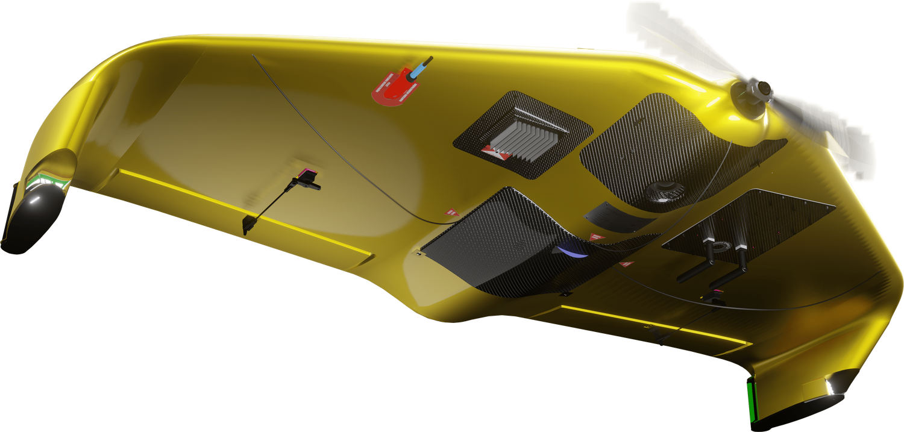
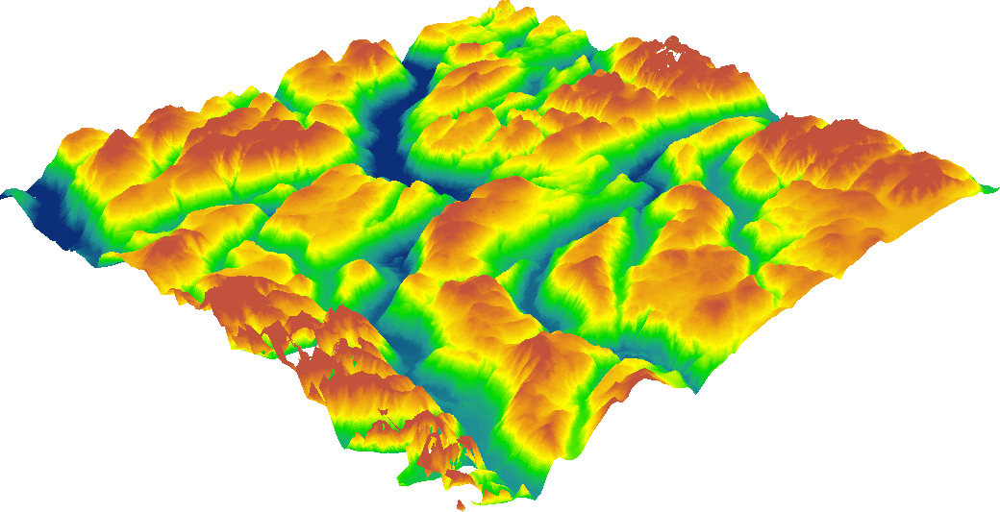
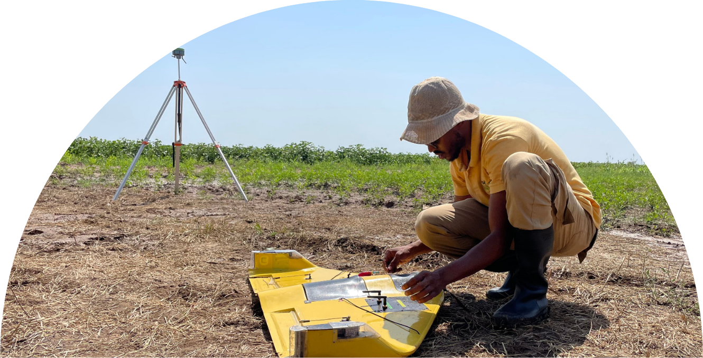
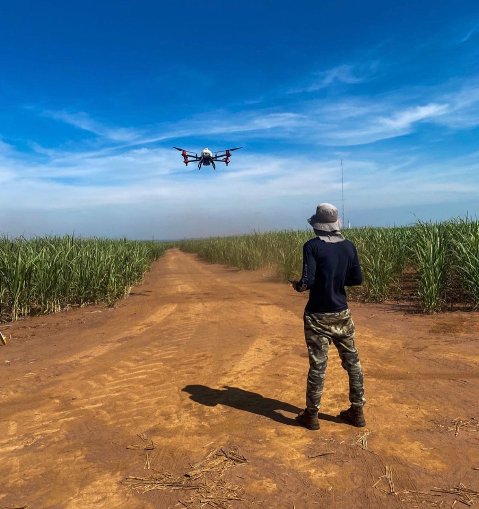
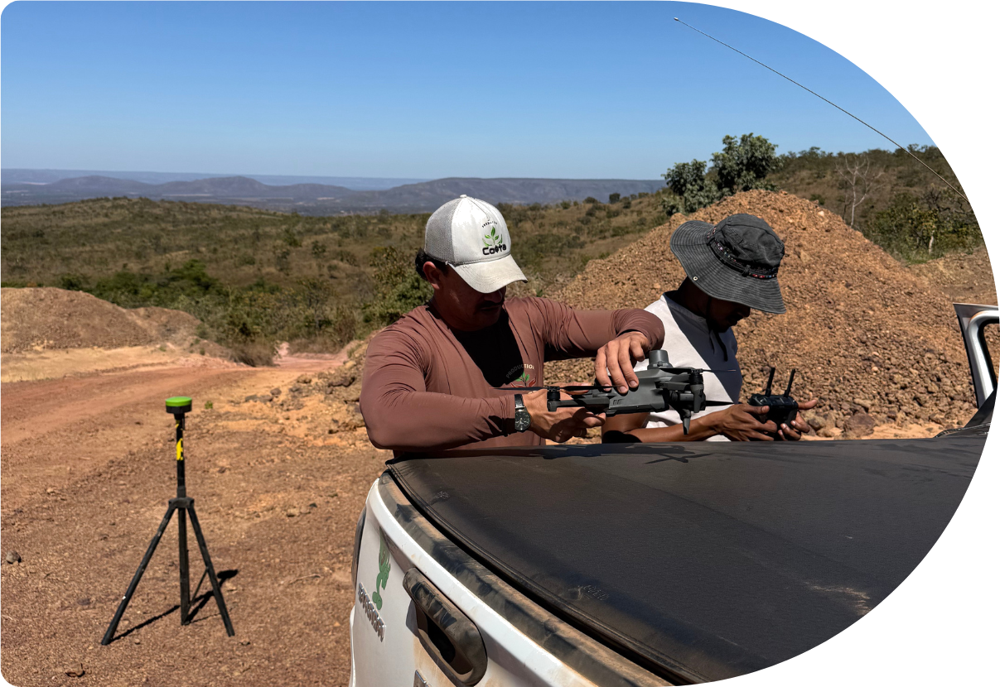
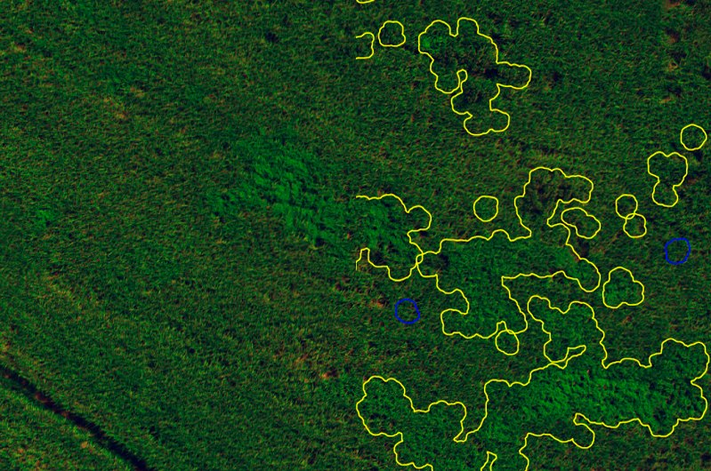
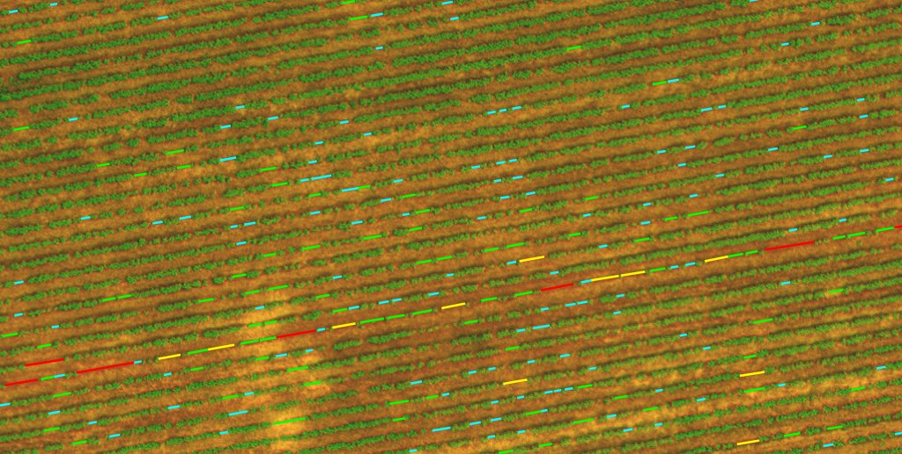
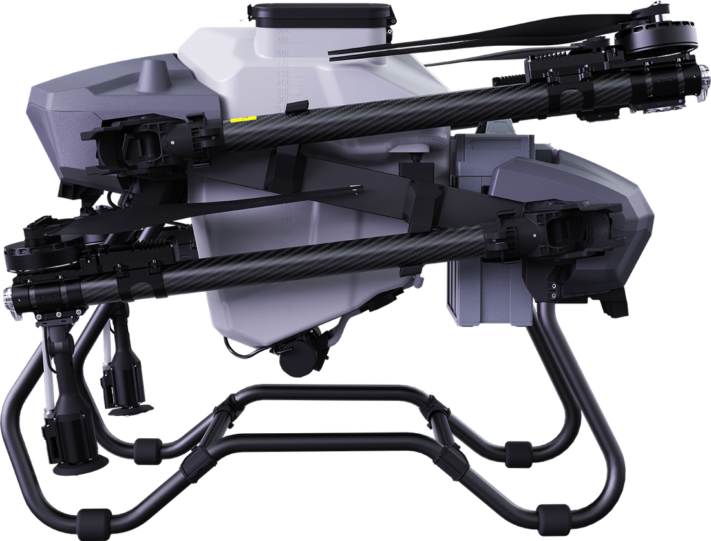
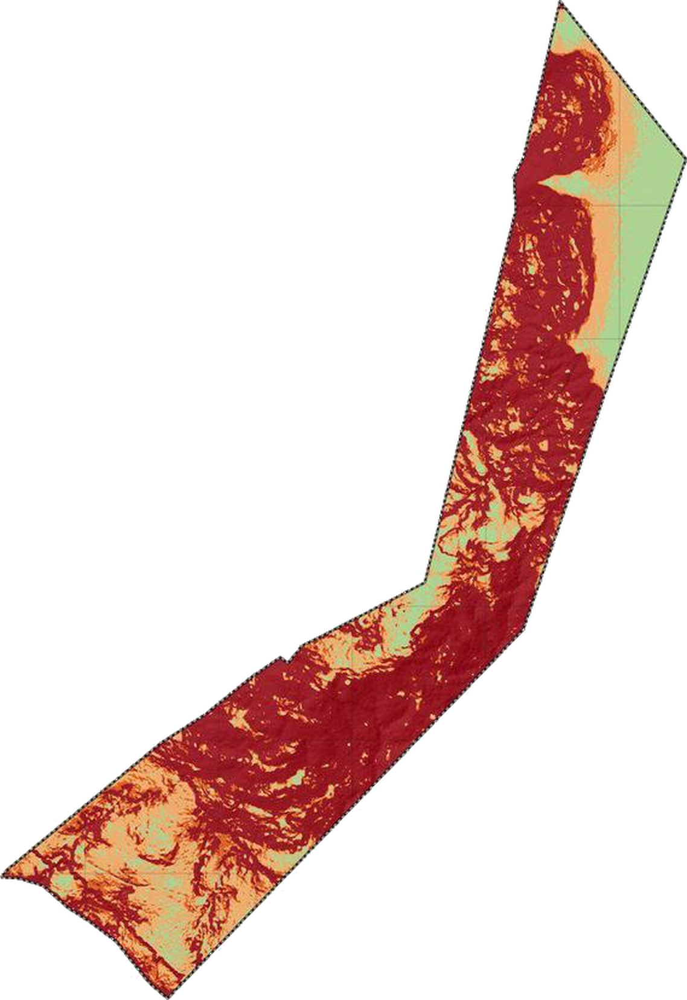
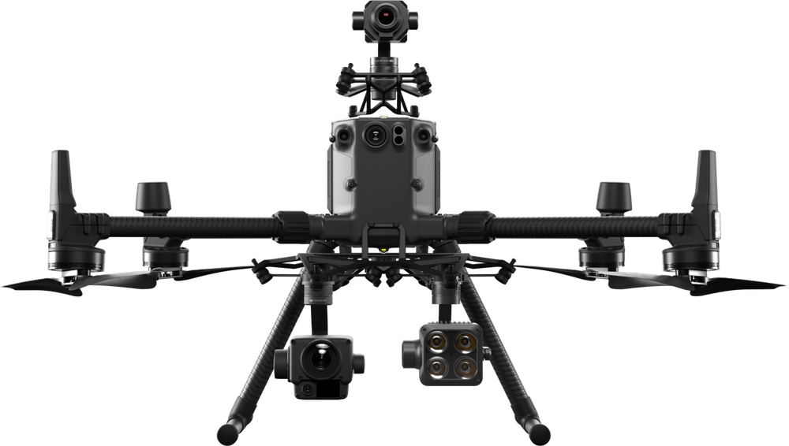

O satélite erra a sua divisa em até dez metros e chuta a declividade da encosta. O nosso voo mede um ponto de altitude a cada metro quadrado da sua terra.
O satélite mostra o entorno: água, solo, relevo, bioma. É o bastante para entender onde a propriedade está, e nada além disso. Divisas saem borradas. A declividade vem estimada.

O voo devolve um ponto de altitude por metro quadrado e a declividade sai calculada em cima dele, área por área.



A gente conta planta por planta e devolve os metros de linha que ficaram vazios, com a posição de cada um.


O mapa multiespectral separa a mancha fraca da lavoura sadia e sai como arquivo de taxa variável, pronto para o pulverizador ler.

Neste levantamento, 359,2 metros separam o ponto mais alto do mais baixo. 26,91 ha ficam abaixo de 5% e 121,76 ha passam de 14%.


Traga a sua. A gente devolve os números dela.